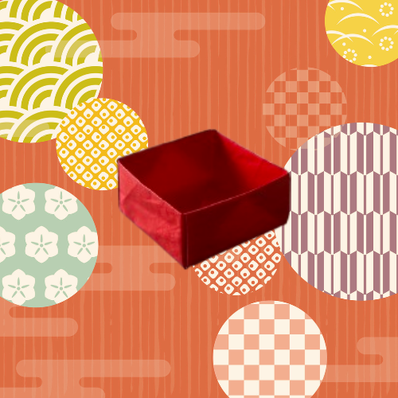
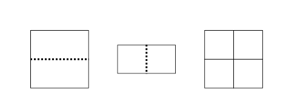
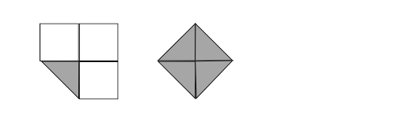
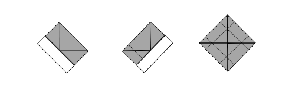
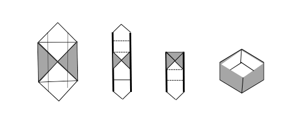

Box
Box origami is very easy to make, and you can put small items inside! Let's give it a try!
- Fold the paper in two in the middle and fold it in two again.

- Fold the four corners inward.

- Fold in from each side toward the center.

- Open the top and bottom two sides and fold them toward the center to form a box shape.
